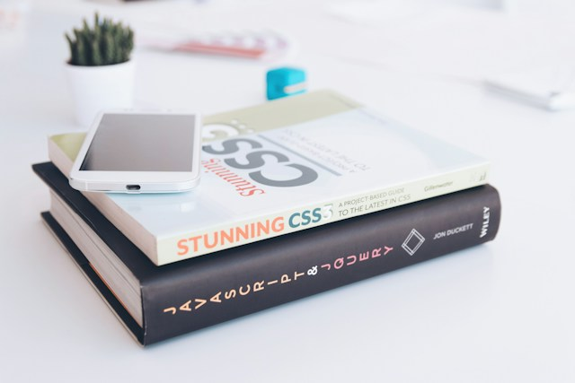

- HTML
- CSS
- javascript
CSS

HTML 등의 마크업 언어로 작성된 문서가 실제로 웹사이트에 표현되는 방법을 정해주는 스타일 시트 언어.
CSS의 C가 Cascading[1]의 약자인데, 이는 상위 요소의 스타일 속성을 자손 요소들에게 상속시켜주는 모습이 DOM 트리구조에서 마치 폭포수처럼 내려가는 모습을 닮았기 때문이다. 다만 예외로 마진, 패딩, 보더 등의 박스모델 관련 속성은 상속되지 않는다. 물론 inherit 값을 줘서 강제로 상속시킬 순 있다.
strong태그는 글자를 진하게 만든다. 닫는태그/strong이다.
This is heading 1
This is heading 2
This is heading 3
This is heading 4
This is heading 5
This is heading 6
h태그는 글자가 강조되고, 글자의 크기를 정한다.
br태그는 줄바꿈이다.
부모태그 ul은 자식태그 li를 가져야 한다.
ol은 자동으로 순서를 매긴다.
sript style link footer header